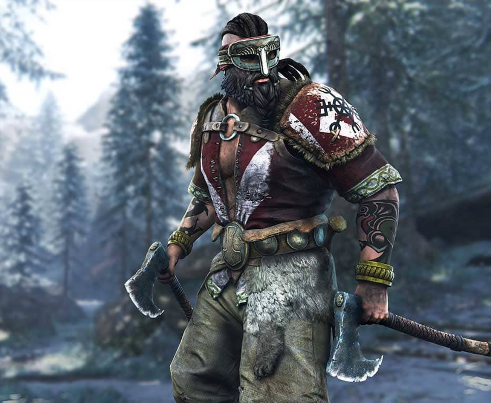

Berserkr
Una fase chiamata berserksgangr fa entrare questi feroci guerrieri vichinghi in uno stato mentale di furia dove non provano dolore .
La venerazione dell'orso non era rara fra i Germanici del nord. "Posseduti" dallo spirito dell'orso, ritenevano di averne la forza e la ferocia, e di poterne assumere l'aspetto.
Sembra che i berserkir facessero parte di sette o società di guerrieri, come si può' supporre da alcune saghe, le quali parlano di gruppi di berserkir con dodici membri dove coloro che desideravano entrare a farne parte dovevano sostenere un combattimento (rituale o reale). Alcuni berserkr cambiavano i loro nomi in björn o biorn, come riferimento all'orso.
Il soprannome che adottavano e la loro inaudita ferocia in battaglia generò infatti una leggenda secondo la quale essi si trasformavano letteralmente in enormi orsi durante la battaglia e si credeva che non potessero essere sconfitti, in quanto insensibili al dolore e alla paura, senza ricorrere all'asportazione di parti vitali, quali cuore o testa.
La terribile reputazione che accompagnava queste bande, e la loro apparizione sul campo di battaglia avevano certamente un grande effetto demoralizzante sui nemici. I berserkir combattevano incoscientemente e con dispiego incredibile di forze.
Erik il Rosso era forse un berserkr. Harald Bellachioma, fondatore del regno di Norvegia, usava i berserkir come truppe d'élite.
Nel 1015 Eiríkr Hákonarson bandì i berserkir, poco dopo il periodo in cui si ipotizza la sua conversione al Cristianesimo.

Agli occhi del Cristianesimo, gli elementi di selvaggio furore accostarono i Berserkir al mito della caccia selvaggia e dunque agli invasati posseduti dal demonio: la Chiesa bandì dunque la figura di tali guerrieri. Gli evangelizzatori predicavano la protezione di un unico dio, non guerriero, padre di tutti gli uomini, contro le trasformazioni dei guerrieri-belva. E così i Berserker divennero l'espressione di un culto in declino: se prima erano considerati indomiti guerrieri dalla forza e dal coraggio sovrumani, a causa della presa di potere dei vescovi, risultano creature diaboliche, fuorilegge, complice l'evoluzione da una società tribale ad una società dall'organizzazione civile più complessa.
Memorabile è l'episodio riportato dalla cronaca anglosassone e dalla saga su Harald Hardråde scritta nel 1225 da Snorri Sturluson, quando sul ponte sullo Stamford (da cui prendeva il nome il villaggio Stamfordbridge), dove il Re Aroldo II Godwinsson d'Inghilterra si scontrò con l'esercito del re norvegese Harald Hardråde, prendendolo di sorpresa, disarmato e impreparato, dopo una marcia leggendaria, a tappe forzate, dalla parte meridionale del regno.
Per ritardare la battaglia e dare ad Harald Hardråde sufficiente tempo per posizionare il suo esercito in formazione circolare su di un'altura, il ponte venne immediatamente occupato da un berserk della guardia d'onore reale, un guerriero norvegese armato di ascia, senza armatura, che combatteva in modo furioso e che terrorizzò l'esercito anglosassone. Egli riuscì a tenere il ponte per circa un'ora, ferendo o buttando di sotto decine di quelli che cercavano di passare, fino a che gli anglosassoni non riuscirono ad ucciderlo posizionando una barca sotto al ponte e trafiggendolo con una lancia.